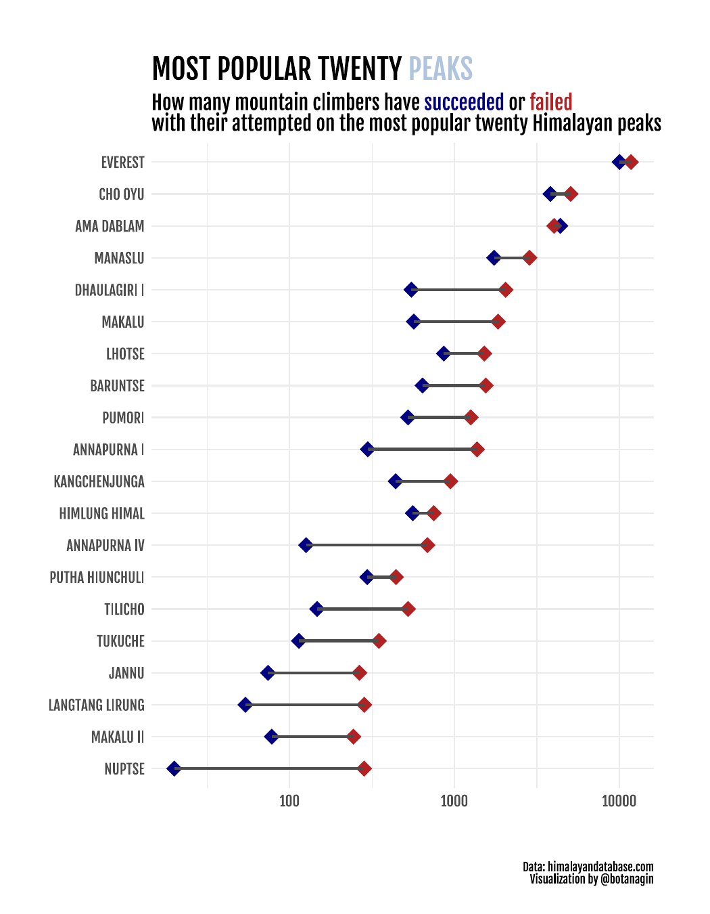

Packages:
Adding font:
Data:
Wrangle the data:
peaks_tidy <- members %>%
group_by(peak_name) %>%
summarise(n = n(),
success = sum(success),
fail = n - success) %>%
ungroup() %>%
pivot_longer(success:fail, "success") %>%
mutate(peak_name = str_to_upper(peak_name) %>% fct_reorder(n)) %>%
arrange(desc(n)) %>%
slice_head(n = 40)Visualizing:
peaks_tidy %>%
ggplot(aes(value, y = peak_name, color = success, group = peak_name)) +
geom_point(size = 4, stroke = 2, shape = 18) +
geom_line(size = 1, color = "grey30") +
scale_x_log10() +
scale_color_manual(values = c("firebrick", "navy")) +
labs(
x = "",
y = "",
title = "MOST POPULAR TWENTY <span style='color:lightsteelblue'>PEAKS</span>",
subtitle = "How many mountain climbers have <span style='color:navy'>succeeded</span> or <span style='color:firebrick'>failed</span> <br> with their attempted on the most popular twenty <span style='color:black'>Himalayan</span> peaks",
caption = "\n \n Data: himalayandatabase.com
Visualization by @botanagin"
) +
theme_minimal() +
theme(
text = element_text(family = "fone"),
legend.position = "none",
plot.subtitle = element_markdown(size = 14),
plot.title = element_markdown(size = 20),
plot.caption = element_text(size = 8),
axis.text = element_text(size = 10),
plot.margin = margin(40, 40, 20, 20)
) Saving the plot:
ggsave(here::here("output", "2020-w39-himalayanclimbing.pdf"),
plot = last_plot(),
height = 9, width = 7, units = "in", dpi = 300)Original: Botan Ağın